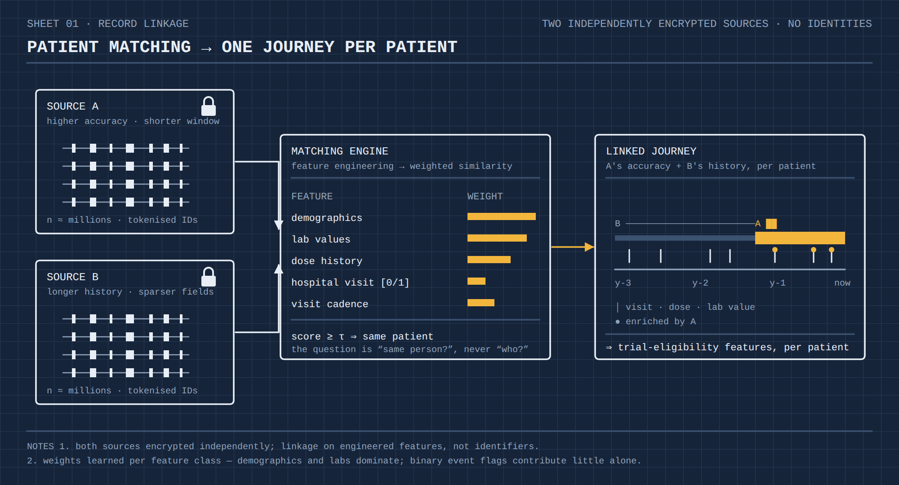
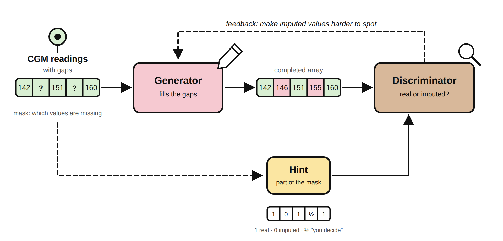
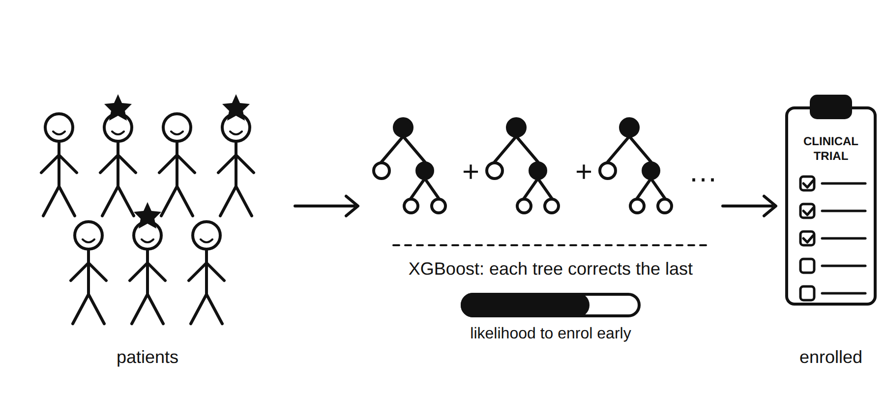

Eight years of research and predictive modelling in healthcare, pharma, chemicals and sustainability — the work that shaped how I evaluate AI systems today.



One question runs through all of my work: how do you build a model you can trust with a decision that matters — and then prove it?
It started in an undergraduate research project at IIT Bombay, where a well-posed model changed a real decision. BASF took the same idea out of the lab and into a working chemical business — my first time building for a large industrial system, with real constraints and real consequences. Cornell turned that instinct into a discipline: a master's thesis on time-series forecasting for drug discovery, grounded in operations research and the habit of stating every trade-off in numbers.
Healthcare brought both scale and stakes. Recovering missing glucose-monitor data for people with Type 2 diabetes with Novo Nordisk and the University of Washington, then three years as an AI architect in oncology at AstraZeneca — matching patients across millions of encrypted records, predicting clinical-trial engagement, building retrieval over sensitive data with privacy designed in. When a wrong answer reaches a patient, evaluation becomes the first thing you build.
At Microsoft the question is the same and the system is new. I work with independent software vendors taking agentic AI to production, and turn what we learn into an open-source reference implementation, workshops, executive briefings, talks and writing.
Research taught me to test before I trust; engineering, to build for the system as it actually is; selling, to begin with the customer's problem rather than the product. Of the three, the last matters most to me — the best technical conversations start by understanding what the person across the table is really trying to do, and that is where I am at my best.